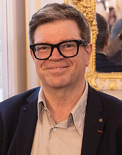

Yann LeCun | |
|---|---|
 LeCun in 2024 | |
| Born | Yann André Le Cun 8 July 1960 Soisy-sous-Montmorency, France |
| Citizenship | |
| Education | |
| Known for | Deep learning |
| Children | 3 |
| Awards |
|
| Scientific career | |
| Fields | |
| Institutions |
|
| Thesis | Modeles connexionnistes de l'apprentissage (connectionist learning models) (1987) |
| Maurice Milgram[2] | |
_(cropped).jpg){kind=link}
Yann André Le Cun[3] (/ləˈkʌn/ lə-KUN; French: [ləkœ̃];[4] usually spelled LeCun;[4] born 8 July 1960) is a French-American computer scientist working in the fields of artificial intelligence, machine learning, computer vision, robotics and image compression.[1][5] He is the Jacob T. Schwartz Professor of Computer Science at the Courant Institute of Mathematical Sciences at New York University. He served as Chief AI Scientist at Meta Platforms before co-founding Advanced Machine Intelligence Labs in December 2025.[6][7][8]
He is well known for his work on optical character recognition and computer vision using convolutional neural networks (CNNs).[5][9] He is also one of the main creators of the DjVu image compression technology, alongside Léon Bottou and Patrick Haffner. He co-developed the Lush programming language with Léon Bottou.
In 2018, LeCun, Yoshua Bengio, and Geoffrey Hinton received the Turing Award from the Association for Computing Machinery (ACM) for their work on deep learning.[10] LeCun, Bengio, and Hinton, and occasionally Jürgen Schmidhuber, are sometimes referred to as the "Godfathers of AI" and "Godfathers of Deep Learning".[11][12]
Early life and education

Yann André Le Cun was born on 8 July 1960 at Soisy-sous-Montmorency, in the suburbs of Paris. His surname, Le Cun, derives from the old Breton form Le Cunff and originates from the region of Guingamp in northern Brittany. Yann is the Breton form of Jean, the French form of John.[4]
He received a Diplôme d'Ingénieur from the ESIEE Paris in 1983 and a PhD in computer science from Université Pierre et Marie Curie (now Sorbonne University) in 1987, during which he proposed an early form of backpropagation, an algorithm crucial for enabling neural networks to learn.[13] Before joining AT&T,[7] LeCun was a postdoctoral researcher for a year, starting in 1987, supervised by Geoffrey Hinton at the University of Toronto.
LeCun has three sons, and his brother is employed by Google. He has American citizenship.[14]
Career and research
LeCun's career has been spent primarily at Bell Labs, New York University and Meta Platforms, Inc.
Bell Labs
In 1988, LeCun joined the Adaptive Systems Research Department at AT&T Bell Laboratories in Holmdel, New Jersey, United States, headed by Lawrence D. Jackel, where he developed a number of new machine learning methods, such as a biologically inspired model of image recognition called convolutional neural networks (LeNet),[15] the "Optimal Brain Damage" regularization methods,[16] and the Graph Transformer Networks method (similar to conditional random field), which he applied to handwriting recognition and Optical character recognition (OCR).[17] The bank check recognition system that he helped develop was widely deployed by NCR and other companies.[18]
In 1996, he joined AT&T Labs-Research as head of the Image Processing Research Department, which was part of Lawrence Rabiner's Speech and Image Processing Research Lab, and worked primarily on the DjVu image compression technology,[19] a format designed for efficient distribution of scanned documents,[20] and used by the Internet Archive to provide access to digitized texts.[21] His collaborators at AT&T include Léon Bottou and Vladimir Vapnik.
New York University
After a brief tenure as a fellow of NEC Research Institute, LeCun joined New York University in 2003, where he is Jacob T. Schwartz Chaired Professor of Computer Science and Neural Science at the Courant Institute of Mathematical Sciences and the Center for Neural Science.[22][23] At NYU, he has worked primarily on energy-based models for supervised and unsupervised learning,[24] feature learning for object recognition in computer vision,[25] and mobile robotics.[26]
In 2012, he became the founding director of the NYU Center for Data Science.[27] On 9 December 2013, LeCun became the first director of Meta AI Research in New York City and in early 2014 stepped down from the NYU–CDS directorship.[28]
In 2013, he and Yoshua Bengio co-founded the International Conference on Learning Representations, which adopted a post-publication open review process he previously advocated on his website. He was the chair and organiser of the "Learning Workshop" held every year between 1986 and 2012 in Snowbird, Utah. He is a member of the Science Advisory Board of the Institute for Pure and Applied Mathematics[29] at UCLA. He is the co-director of the Learning in Machines and Brain research program (formerly Neural Computation & Adaptive Perception) of CIFAR.[30]
In 2016, he was the visiting professor of computer science on the Chaire Annuelle Informatique et Sciences Numériques at Collège de France in Paris, where he presented the leçon inaugurale (inaugural lecture).[31] In 2023, he was named as the inaugural Jacob T. Schwartz Chaired Professor in Computer Science at NYU's Courant Institute.[32] LeCun is also a scientific advisor to French research group Kyutai which is being funded by Xavier Niel, Rodolphe Saadé, Eric Schmidt, and others.[33]
Meta Platforms
LeCun joined Facebook (now Meta Platforms) in 2013 as chief AI scientist and led the company's AI research laboratory, FAIR.
AMI Labs
On 19 November 2025, LeCun confirmed that he would be leaving Meta after ten years to found his own company focused on world-model architectures and human-like artificial intelligence he calls superintelligence.[8][34][35]
The company he founded, Advanced Machine Intelligence Labs (or AMI Labs), is run by CEO Alex LeBrun, with LeCun serving as Executive Chair.[36] This venture is focused on building AI "world models": systems that learn to understand the physical world's structure and dynamics rather than just predict text like large language models.[37]
In March 2026, AMI announced it had raised $1.03 billion in funding at a $3.5 billion pre-money valuation. The funding round was co-led by investors including Cathay Innovation, Greycroft, Hiro Capital, HV Capital and Bezos Expeditions.[38][39]
In January 2026, LeCun became founding chair of the Technical Research Board of Logical Intelligence, an AI company developing energy-based (EBM) reasoning systems.[40]
Honours and awards
LeCun is a member of the US National Academy of Sciences,[41][42] National Academy of Engineering and the French Académie des Sciences.
He has received honorary doctorates from Instituto Politécnico Nacional (IPN) in Mexico City[43] in 2016, from EPFL[44] in 2018, from Université Côte d'Azur in 2021,[45] from Università di Siena in 2023,[46] and from Hong Kong University of Science and Technology in 2023.
In 2014, he received the IEEE Neural Network Pioneer Award and in 2015, the PAMI Distinguished Researcher Award.[47]
In 2018, LeCun was awarded the IRI Medal, established by the Industrial Research Institute (IRI),[48] and the Harold Pender Award, given by the University of Pennsylvania.[49]
In 2019, he received the Golden Plate Award of the American Academy of Achievement.[50]
In March 2019, LeCun won the 2018 Turing Award, sharing it with Yoshua Bengio and Geoffrey Hinton.[51]
In 2022, he received the Princess of Asturias Award in the category "Scientific Research", along with Yoshua Bengio, Geoffrey Hinton and Demis Hassabis.[52]
In 2023, the President of France made him a Chevalier (Knight) of the French Legion of Honour.[53]
During the World Economic Forum (WEF) 2024 in Davos, he received the Global Swiss AI Award 2023.[54] The same year, he received the grand prize of the VinFuture Prize alongside Yoshua Bengio, Jensen Huang, Geoffrey Hinton, and Fei-Fei Li for their groundbreaking contributions to neural networks and deep learning algorithms.[55]
In 2025, he was awarded the Queen Elizabeth Prize for Engineering jointly with Yoshua Bengio, Bill Dally, Geoffrey E. Hinton, John Hopfield, Jensen Huang and Fei-Fei Li.[56][57]
References
- ^ a b Yann LeCun publications indexed by Google Scholar
- ^ "Yann LeCun - The Mathematics Genealogy Project". www.mathgenealogy.org. Retrieved 26 July 2026.
- ^ "Version électronique authentifiée publiée au JO n° 0001 du 01/01/2020 | Legifrance". Legifrance.gouv.fr (in French). Retrieved 4 January 2020.
- ^ a b c "Fun Stuff". yann.lecun.com. Retrieved 20 March 2020.
- ^ a b Yann LeCun; Yoshua Bengio; Geoffrey Hinton (28 May 2015). "Deep learning". Nature. 521 (7553): 436–444. doi:10.1038/NATURE14539. ISSN 1476-4687. PMID 26017442. Wikidata Q28018765.
- ^ Shaban, Hamza (2019). "Artificial-intelligence pioneers win $1 million Turing Award". Washingtonpost.com. The Washington Post.
- ^ a b Metz, Cade (2019). "Turing Award Won by 3 Pioneers in Artificial Intelligence". nytimes.com. The New York Times. Archived from the original on 16 June 2021.
- ^ a b Heikkilä, Melissa (2025). "Computer scientist Yann LeCun: 'Intelligence really is about learning'". ft.com. London: Financial Times. Retrieved 11 November 2025.
"I'm sure there's a lot of people at Meta who would like me to NOT tell the world that LLMs basically are a dead end when it comes to superintelligence"
- ^ LeCun, Yann; Bottou, Léon; Bengio, Yoshua; Haffner, Patrick (1998). "Gradient-based learning applied to document recognition" (PDF). Proceedings of the IEEE. 86 (11): 2278–2324. Bibcode:1998IEEEP..86.2278L. doi:10.1109/5.726791. S2CID 14542261. Archived from the original (PDF) on 30 October 2023. Retrieved 23 December 2014.
- ^ "Fathers of the Deep Learning Revolution Receive ACM A.M. Turing Award". Association for Computing Machinery. New York. 27 March 2019. Retrieved 27 March 2019.
- ^ Anon (2019). "Nobel prize of tech awarded to 'godfathers of AI'". telegraph.co.uk. The Daily Telegraph. Retrieved 20 March 2020.
- ^ Kahn, Jeremy (27 March 2019). "Three 'Godfathers of Deep Learning' Selected for Turing Award". bloomberg.com. Retrieved 10 November 2020.
- ^ Y. LeCun: Une procédure d'apprentissage pour réseau a seuil asymmetrique (a Learning Scheme for Asymmetric Threshold Networks), Proceedings of Cognitiva 85, 599–604, Paris, France, 1985.
- ^ Guiton, Amaelle (7 September 2015). "Yann LeCun, le temps des machines" [Yann LeCun, the age of machines]. Libération (in French). Retrieved 9 July 2024.
- ^ Y. LeCun, B. Boser, J. S. Denker, D. Henderson, R. E. Howard, W. Hubbard and L. D. Jackel: Backpropagation Applied to Handwritten Zip Code Recognition, Neural Computation, 1(4):541–551, Winter 1989.
- ^ Yann LeCun, J. S. Denker, S. Solla, R. E. Howard and L. D. Jackel: Optimal Brain Damage, in Touretzky, David (Eds), Advances in Neural Information Processing Systems 2 (NIPS*89), Morgan Kaufmann, Denver, CO, 1990.
- ^ Yann LeCun, Léon Bottou, Yoshua Bengio and Patrick Haffner: Gradient Based Learning Applied to Document Recognition, Proceedings of IEEE, 86(11):2278–2324, 1998.
- ^ LeCun, Yann; Bottou, Léon; Bengio, Yoshua; Haffner, Patrick (1998). "Gradient-Based Learning Applied to Document Recognition". Proceedings of the IEEE. 86 (11): 2278–2324. doi:10.1109/5.726791.
- ^ Léon Bottou, Patrick Haffner, Paul G. Howard, Patrice Simard, Yoshua Bengio and Yann LeCun: "High Quality Document Image Compression with DjVu", Journal of Electronic Imaging, 7(3):410–425, 1998.
- ^ Bottou, Léon; Haffner, Patrick; Howard, Paul G.; Simard, Patrice; Bengio, Yoshua; LeCun, Yann (1998). "High Quality Document Image Compression with DjVu". Journal of Electronic Imaging. 7 (3): 410–425. doi:10.1117/1.482559.
- ^ "About the BookReader". Internet Archive. Retrieved 20 March 2026.
- ^ "People – Electrical and Computer Engineering". Polytechnic Institute of New York University. Retrieved 13 March 2013.
- ^ "Yann LeCun's Home Page".
- ^ Yann LeCun, Sumit Chopra, Raia Hadsell, Ranzato Marc'Aurelio, Fu-Jie Huang, "A Tutorial on Energy-Based Learning", in Bakir, G. and Hofman, T. and Schölkopf, B. and Smola, A. and Taskar, B. (Eds), Predicting Structured Data, MIT Press, 2006.
- ^ Kevin Jarrett, Koray Kavukcuoglu, Marc'Aurelio Ranzato, Yann LeCun, "What is the Best Multi-Stage Architecture for Object Recognition?", Proc. International Conference on Computer Vision (ICCV'09), IEEE, 2009
- ^ Raia Hadsell, Pierre Sermanet, Marco Scoffier, Ayse Erkan, Koray Kavackuoglu, Urs Muller, Yann LeCun, "Learning Long-Range Vision for Autonomous Off-Road Driving", Journal of Field Robotics, 26(2):120–144, February 2009.
- ^ "Center for Data Science – New York University".
- ^ Levy, Steven. "How Not to Be Stupid About AI, With Yann LeCun". Wired. ISSN 1059-1028. Retrieved 22 October 2025.
- ^ http://www.ipam.ucla.edu/programs/gss2012/ Institute for Pure and Applied Mathematics
- ^ "Neural Computation & Adaptive Perception Advisory Committee Yann LeCun". CIFAR. Retrieved 16 December 2013.
- ^ "L'apprentissage profond : une révolution en intelligence artificielle". College-de-france.fr. 28 August 2015. Retrieved 1 March 2022.
- ^ "Yann LeCun Announced as Inaugural Jacob T. Schwartz Chair". CIMS. Retrieved 10 December 2023.
- ^ Dillet, Romain (17 November 2023). "Kyutai is a French AI research lab with a $330 million budget that will make everything open source". TechCrunch. Retrieved 16 June 2024.
- ^ "Yann LeCun to leave Meta, launch AI startup focused on Advanced Machine Intelligence". reuters.com. Reuters.
- ^ Heikkilä, Melissa (2025). "Meta chief AI scientist Yann LeCun plans to exit and launch own start-up". ft.com. London: Financial Times. Retrieved 11 November 2025.
- ^ "Yann LeCun's New Startup AMI Labs: Can World Models Move Beyond Hype?". forbes.com. Retrieved 22 December 2025.
- ^ "AI tools are being prepared for the physical world". The Economist. ISSN 0013-0613. Retrieved 4 March 2026.
- ^ "Ex-Meta AI chief Yann LeCun's AMI raises $1.03 billion for alternative AI approach". Reuters. 10 March 2026.
- ^ "Yann LeCun Raises $1 Billion to Build AI That Understands the Physical World". Wired. 2026.
- ^ "Logical Intelligence Introduces First Energy-Based Reasoning AI Model, Signals Early Steps Toward AGI, Adds Yann LeCun and Patrick Hillmann to Leadership". Businesswire.com. Retrieved 1 July 2026.
- ^ "News from the National Academy of Sciences". 26 April 2021. Archived from the original on 26 April 2021. Retrieved 4 July 2021.
Newly elected members and their affiliations at the time of election are: … LeCun, Yann; vice president and chief artificial intelligence scientist, Facebook; and Silver Professor of Computer Science, Data Science, Neural Science, and Electrical and Computer Engineering, New York University, New York City
- ^ "Member Directory". nasonline.org. National Academy of Sciences. Retrieved 4 July 2021.
- ^ "Primera generación de Doctorados Honoris Causa en el IPN". Retrieved 11 October 2016.
- ^ Aubort, Sarah (10 August 2018). "EPFL celebrates 1,043 new Master's graduates". Retrieved 27 January 2019.
- ^ Sanfilippo, Delphine. "YANN LECUN, DOCTEUR HONORIS CAUSA D'UNIVERSITÉ CÔTE D'AZUR". Newsroom. Archived from the original on 21 September 2022. Retrieved 19 September 2022.
- ^ "Laurea ad honorem a Yann LeCun | Università degli Studi di Siena". Unisi.it.
- ^ "PAMI Distinguished Researcher Award". IEEE Computer Society Technical Committee on Pattern Analysis and Machine Intelligence. 24 August 2023. Retrieved 15 February 2024.
- ^ "Awards – Best Practices in Digital Innovation". Innovation Research Interchange.
- ^ "2018 Harold Pender Award and Lecture: Yann LeCun". Retrieved 22 May 2019.
- ^ "Golden Plate Awardees of the American Academy of Achievement". achievement.org. American Academy of Achievement.
- ^ Metz, Cade (27 March 2019). "Three Pioneers in Artificial Intelligence Win Turing Award". The New York Times. ISSN 0362-4331. Retrieved 27 March 2019.
- ^ IT, Developed with webControl CMS by Intermark. "Geoffrey Hinton, Yann LeCun, Yoshua Bengio and Demis Hassabis – Laureates – Princess of Asturias Awards". The Princess of Asturias Foundation.
- ^ "Yann LeCun on LinkedIn: Today, I was made a Chevalier de la Légion d'Honneur by President Macron… | 590 comments". Linkedin.com.
- ^ Yann LeCun wins the Global Swiss AI Award 2023. zhaw.ch, 18 January 2024. Retrieved 22 January 2024.
- ^ "The VinFuture 2024 Grand Prize honours 5 scientists for transformational contributions to the advancement of deep learning". Việt Nam News. 7 December 2024.
- ^ "Modern Machine Learning". Queen Elizabeth Prize for Engineering. Retrieved 1 July 2026.
- ^ The Minds of Modern AI: Jensen Huang, Geoffrey Hinton, Yann LeCun & the AI Vision of the Future. 6 November 2025. Retrieved 9 November 2025 – via YouTube.